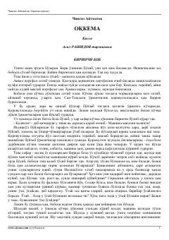

OTog'li hududda yashovchi yolg'iz bolaning ta'sirli va fojiali hayoti haqidagi qissa.
Asarda tog'li hududda bobosi va o'gay buvisi bilan yashayotgan yolg'iz bolaning og'ir va ta'sirli hayoti tasvirlanadi. Bola o'zining boy tasavvur olami va tabiat bilan bog'liqligi orqali kattalar dunyosidagi shafqatsizlik va yolg'onlarga qarshi kurashadi.